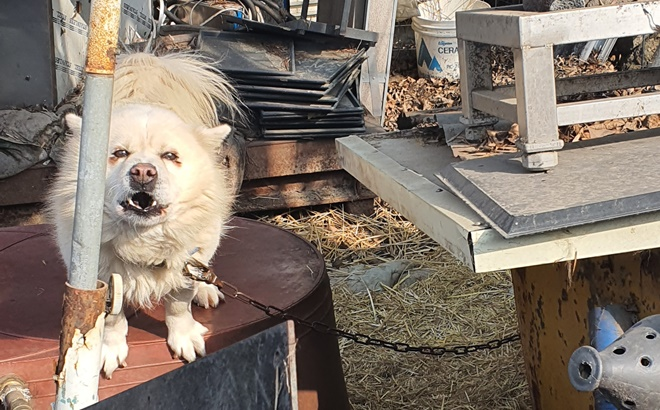

우리가 함께 찾은 동물들
0마리
동물학대 촬영물 관리 의무를 법적으로 규정하라
각종 온라인 채널을 통해 잔혹한 동물학대 행위가 실시간으로 유포되고 있고 이러한 내용이 또 다른 범죄로 이어질 우려가 높은 만큼, 이에 대한 정부의 적극적인 규제가 필요한 상황입니다.

외로운 밭지킴이에서 반려동물로,쥐잡이 천덕꾸러기에서 마을 고양이로!
지역 사회에 공헌하는 프로그램으로서, 대화와 협업을 통한 실천적 동물보호 활동으로 동물과 더불어 살아가는 실천적인 활동의 모델이 될 수 있기를 희망합니다
길고양이 돌봄 활동에 대한 설문조사
케어테이커의 사회적 역할을 확인하고 길고양이 보호 정책 발전에 근거 자료로 삼겠습니다. 길고양이 보호 활동을 둘러싸고 벌어지는 오해를 해소시키며 보다 효과적으로 동물보호 활동을 하겠습니다.
실종동물 찾기
스트릿애니멀파인더는 여러분의 슬기로운 반려동물과의 생활을 응원합니다~
잃어버린 반려동물을 찾아야 한다면 스트릿애니멀파인더와 함께~~~~~~
카라의 주요 활동
전체보기
실종동물 찾기
커뮤니티
전문가FAQ
+ 더보기